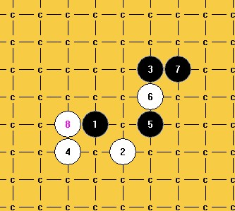
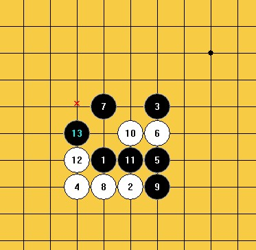
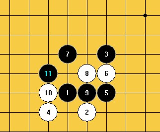
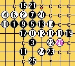

请教流星的几个问题！
#1 请教流星的几个问题！作者：来来往往 发表时间：2012-7-30 21:04:21
这个流星定式，白30后是否会白必胜？黑有没有好的31的点？［此帖子已被 来来往往 在 2012-7-30 21:05:32 编辑过］
［ 有志青年 于 2012-7-31 9:49:16 时奖励此帖[金币加 100 威望加1］
#2 Re:请教流星的几个问题！作者：来来往往 发表时间：2012-7-30 21:07:52
这个流星定式据说白必杀，到底如何必杀啊？#3 Re:请教流星的几个问题！作者：来来往往 发表时间：2012-7-30 21:10:16
流星这个6，黑7下K10败了，H10是什么情况呢？#4 Re:请教流星的几个问题！作者：来来往往 发表时间：2012-7-30 21:13:26
流星这一路下法，哪位高手推荐个21能做到黑优啊？#5 Re:请教流星的几个问题！作者：山城刀客 发表时间：2012-7-30 22:20:36
先说最后一图：
这个21可以确保黑棋优吧！
#6 Re:请教流星的几个问题！作者：山城刀客 发表时间：2012-7-30 22:34:28
关于这个6后面的两个7：

另一个7黑优：
［ 来来往往 于 2012-7-31 12:10:33 时花20金币送鲜花一朵］
［ 来来往往 于 2012-7-31 12:10:33 时花20金币送鲜花一朵］
［ 来来往往 于 2012-7-31 12:10:33 时花20金币送鲜花一朵］
#7 Re:请教流星的几个问题！作者：屏蔽 发表时间：2012-7-30 23:02:51
先说最后一图……黑真优不了。#8 Re:请教流星的几个问题！作者：屏蔽 发表时间：2012-7-30 23:16:08
1L 只能动21-29那个活二，目测没什么好点。
2L 问大鱼。
#9 Re:请教流星的几个问题！作者：自来水 发表时间：2012-7-31 0:08:40
3L
6不怎么靠谱，但这个7可以还原，后面白优（白12不能反挡）
7的走法可以如下
其他再说
#10 Re:请教流星的几个问题！作者：山城刀客 发表时间：2012-7-31 1:21:06
这一路没法搞定，白棋杀不出吧？
#11 Re:请教流星的几个问题！作者：来来往往 发表时间：2012-7-31 5:22:03
这个17白是可以必杀的，曾经看到过截图，可棋谱没见，我也没拆出来，但确实见到了截图，对方估计不愿外泄吧。见的图虽然是岚月刀的，但跟流星是相通的，这岚月刀，我是拆到最后唯一通到这个流星变化，17之前都白必杀的。#12 Re:请教流星的几个问题！作者：来来往往 发表时间：2012-7-31 5:40:17
#13 Re:请教流星的几个问题！作者：来来往往 发表时间：2012-7-31 5:42:39
那位高手，说2L问大鱼，大鱼是谁啊？他对这个下法有结论？#14 Re:请教流星的几个问题！作者：来来往往 发表时间：2012-7-31 5:46:40
这个下法我下这个26，白是有很强的攻击，但地毯总觉得差那么一点点。#15 Re:来来往往【==Re:请教流星的几个问题！==】作者：sonix 发表时间：2012-7-31 8:24:06
［ 来来往往 于 2012-7-31 12:09:03 时花20金币送鲜花一朵］
［ 来来往往 于 2012-7-31 12:09:03 时花20金币送鲜花一朵］
#16 Re:请教流星的几个问题！作者：屏蔽 发表时间：2012-7-31 8:55:58
卧槽 抬头三尺有神明#17 Re:来来往往【==Re:请教流星的几个问题！==】作者：空恨社小仙 发表时间：2012-7-31 9:15:02
［ 来来往往 于 2012-7-31 12:17:52 时花20金币送鲜花一朵］
#18 Re:请教流星的几个问题！作者：来来往往 发表时间：2012-7-31 12:05:12
谢谢，这个36我知道也必杀，但黑多了走四，我一般采取我那图上的走法，黑没有走四的机会，而且是直接VCT。［此帖子已被 来来往往 在 2012-7-31 12:12:59 编辑过］
#19 Re:sonix【==Re:来来往往【==Re:请教流星的几个问题！==】==】作者：来来往往 发表时间：2012-7-31 12:34:51
下这个26，这个27的位置的很强啊，后来我放弃了，你那怎么必杀的啊？
#20 Re:请教流星的几个问题！作者：山城刀客 发表时间：2012-7-31 13:57:27
上图的27弱，
这个简单杀，不复杂。
关键是下面的两个27，不好搞定吧！
这两个27怎么杀？？？
#21 Re:请教流星的几个问题！作者：蝶舞红枫 发表时间：2012-7-31 14:22:40
好像能杀